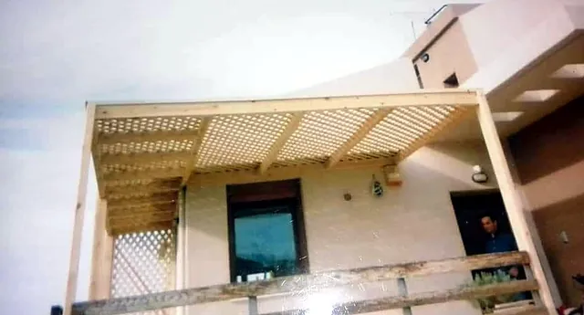
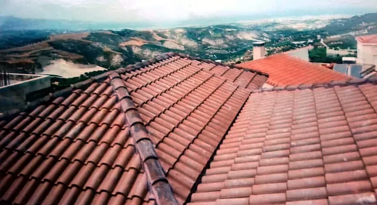
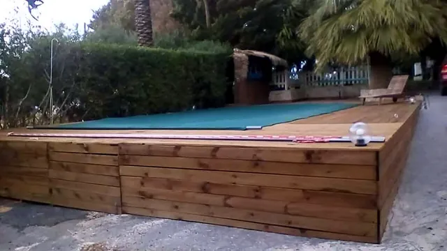
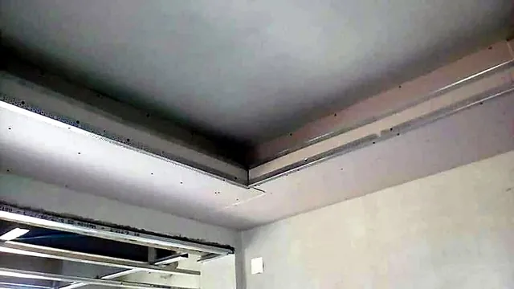
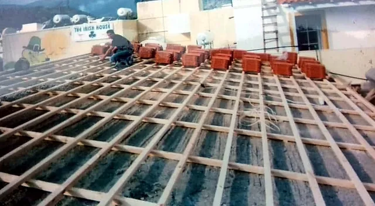

Ο Χρήστος Ν. Πρινιανάκης είναι ξυλουργός με έδρα τον Κρουσώνα Ηρακλείου Κρήτης. Αναλαμβάνει ξυλουργικές εργασίες και κατασκευές: πέργκολες με κεραμίδι ή καφασωτό, κεραμοσκεπές με ξύλινο σκελετό, ξύλινα πατώματα και deck, καθώς και ψευδοροφές από γυψοσανίδα με κρυφό φωτισμό. Δουλεύει Δευτέρα με Σάββατο, 08:00–17:00.
Εργασίες
Τι αναλαμβάνουμε
Πέντε είδη εργασιών, ένας τεχνίτης που μιλάτε απευθείας μαζί του — από το πρώτο τηλέφωνο μέχρι το τέλος της δουλειάς.

Ξύλινες πέργκολες
Πέργκολες για αυλές, βεράντες, μπαλκόνια και επαγγελματικούς χώρους. Με κεραμίδι από πάνω για σταθερή σκιά και προστασία από τη βροχή, ή με καφασωτό για πιο ανάλαφρο αποτέλεσμα, που αφήνει το φως να περνά. Το μέγεθος, το σχήμα και η απόχρωση του ξύλου προσαρμόζονται στον χώρο σας και στο ύφος του σπιτιού. Συζητάμε μαζί τι χρειάζεστε και προτείνουμε τη λύση που ταιριάζει.
Με κεραμίδι
Καφασωτές
Σπίτια & καταστήματα

Κεραμοσκεπές
Κεραμοσκεπές με ξύλινο σκελετό, για καινούργια σπίτια και για στέγες που χρειάζονται ανανέωση. Η δουλειά ξεκινά από τα ζευκτά και τα δοκάρια, συνεχίζει με το ξύλινο ταβάνι και τις τάβλες και τελειώνει όταν περάσουν τα κεραμίδια και κλείσει ο κορφιάς. Κάθε στρώση μετράει, για να κρατάει η στέγη χρόνια και να μη μπαίνει νερό. Δείτε παρακάτω, βήμα βήμα, πώς στήνεται μια ξύλινη κεραμοσκεπή.
Ξύλινα στέγαστρα για μπαλκόνια και εισόδους, σκέπαστρα για το αυτοκίνητο, κάγκελα και ό,τι άλλο θέλει ξύλο και σωστή μαστοριά. Κάθε κατασκευή γίνεται στα μέτρα του χώρου σας, με ενώσεις που κρατούν και φινίρισμα που προστατεύει το ξύλο από τον ήλιο και τη βροχή της Κρήτης. Πείτε μας τι έχετε στο μυαλό σας και θα σας πούμε πώς γίνεται.
Στέγαστρα
Σκέπαστρα αυτοκινήτου
Κάγκελα

Ξύλινα πατώματα & deck
Ξύλινα πατώματα για εσωτερικούς χώρους και deck για αυλές, βεράντες και γύρω από την πισίνα. Το ξύλο ζεσταίνει τον χώρο και είναι ευχάριστο στο πάτημα. Εξίσου σημαντικό είναι τι υπάρχει από κάτω: σωστή, σταθερή βάση και αερισμός, ώστε το πάτωμα να μένει γερό και οι σανίδες να αντέχουν. Σας βοηθάμε να διαλέξετε τη λύση που ταιριάζει στο σημείο που θα μπει.
Εσωτερικά πατώματα
Deck
Γύρω από πισίνα

Γυψοσανίδες & κρυφός φωτισμός
Ψευδοροφές και επενδύσεις από γυψοσανίδα, με εσοχές για κρυφό φωτισμό που δίνει απαλό, έμμεσο φως στον χώρο. Κρύβουν καλώδια και σωληνώσεις, ισιώνουν ταβάνια και δίνουν ένα καθαρό, σύγχρονο αποτέλεσμα σε σπίτια και επαγγελματικούς χώρους. Το σχέδιο των γραμμών και του φωτός το συζητάμε μαζί σας πριν ξεκινήσουμε.
Ψευδοροφές
Κρυφός φωτισμός
Επενδύσεις
Βήμα βήμα
Πώς στήνεται μια ξύλινη κεραμοσκεπή
Ο σκελετόςΖευκτά και δοκάρια μπαίνουν στη θέση τους. Πάνω τους πατάει όλη η στέγη, γι’ αυτό μετρούν οι σωστές διατομές και οι γερές ενώσεις.
Το ξύλινο ταβάνιΟι σανίδες κλείνουν τον σκελετό. Από μέσα, στο σπίτι, φαίνονται ως ξύλινο ταβάνι.
Μόνωση & στεγάνωσηΌπου χρειάζεται, μόνωση και στεγανωτική μεμβράνη, ώστε να μη μπαίνει νερό και το σπίτι να κρατά τη θερμοκρασία του.
Οι τάβλεςΤάβλες στις σωστές αποστάσεις, εκεί ακριβώς που θα πατήσει κάθε κεραμίδι.
Τα κεραμίδιαΤα κεραμίδια περνούν σειρά σειρά, από κάτω προς τα πάνω, και κλείνει ο κορφιάς.
Τα στάδια είναι ενδεικτικά — κάθε στέγη σχεδιάζεται ανάλογα με το σπίτι.
1/5

Στην πράξη: τάβλες έτοιμες για τα κεραμίδια
Πώς δουλεύουμε
Από το πρώτο τηλέφωνο ως το τελευταίο κεραμίδι
1
Μας τηλεφωνείτε
Καλείτε στο 697 275 2705, Δευτέρα με Σάββατο, 08:00–17:00, και μας λέτε τι θέλετε να φτιάξουμε — με διαστάσεις, αν τις έχετε.
2
Βλέπουμε τον χώρο
Συζητάμε τι χρειάζεστε και, όπου χρειάζεται, περνάμε να δούμε τον χώρο πριν προτείνουμε οτιδήποτε.
3
Καθαρή πρόταση
Σας λέμε τι προτείνουμε, πώς θα γίνει και πόσο κοστίζει. Πληρωμή με μετρητά, με ευκολίες που συμφωνούμε μαζί.
4
Κατασκευή & παράδοση
Το φτιάχνουμε με προσοχή, κρατάμε τον χώρο τακτοποιημένο και το παραδίδουμε τελειωμένο, έτοιμο να το χαρείτε.
Η έδρα μας είναι ο Κρουσώνας Ηρακλείου. Αναλαμβάνουμε εργασίες στον Κρουσώνα και στην ευρύτερη περιοχή του Ηρακλείου. Πείτε μας πού βρίσκεται ο χώρος σας και θα σας απαντήσουμε αμέσως.
Πώς παίρνω προσφορά για μια κατασκευή;
Τηλεφωνήστε στο 697 275 2705, Δευτέρα με Σάββατο 08:00–17:00. Περιγράψτε τι θέλετε να φτιάξετε, με διαστάσεις αν τις έχετε. Όπου χρειάζεται βλέπουμε πρώτα τον χώρο και μετά σας λέμε τι προτείνουμε και πόσο κοστίζει.
Τι εργασίες αναλαμβάνετε;
Ξυλουργικές εργασίες και κατασκευές: ξύλινες πέργκολες με κεραμίδι ή καφασωτό, κεραμοσκεπές με ξύλινο σκελετό, στέγαστρα και σκέπαστρα, ξύλινα πατώματα και deck, καθώς και ψευδοροφές από γυψοσανίδα με κρυφό φωτισμό.
Πέργκολα με κεραμίδι ή καφασωτή — ποια να διαλέξω;
Η πέργκολα με κεραμίδι δίνει πλήρη σκιά και προστατεύει από τη βροχή, οπότε ο χώρος από κάτω χρησιμοποιείται όλο τον χρόνο. Η καφασωτή αφήνει να περνούν φως και αέρας και είναι πιο ανάλαφρη στην όψη. Η επιλογή εξαρτάται από τον χώρο και τη χρήση· θα σας πούμε τι ταιριάζει.
Τι είναι ο κρυφός φωτισμός με γυψοσανίδα;
Είναι φωτισμός, συνήθως ταινίες LED, που μπαίνει μέσα σε εσοχή της ψευδοροφής από γυψοσανίδα. Η πηγή του φωτός δεν φαίνεται· φαίνεται μόνο το απαλό, έμμεσο φως στο ταβάνι ή στον τοίχο.
Ποιες ώρες μπορώ να σας βρω;
Δευτέρα με Σάββατο, 08:00 με 17:00, στο 697 275 2705. Αν δεν απαντήσουμε αμέσως επειδή είμαστε σε δουλειά, στείλτε μας ένα μήνυμα και θα σας καλέσουμε.
Πώς γίνεται η πληρωμή;
Η πληρωμή γίνεται με μετρητά και υπάρχουν ευκολίες πληρωμής. Τους όρους τους συζητάμε μαζί σας όταν συμφωνήσουμε τη δουλειά.
Ο Κρουσώνας είναι ορεινό χωριό του Δήμου Μαλεβιζίου, περίπου 20 χιλιόμετρα νοτιοδυτικά του Ηρακλείου, στους πρόποδες του Ψηλορείτη. Αναλαμβάνουμε εργασίες στο χωριό και στην ευρύτερη περιοχή του Ηρακλείου.